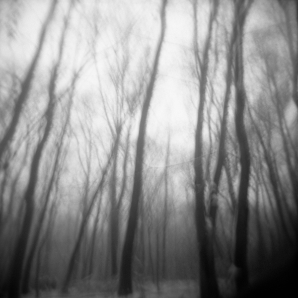
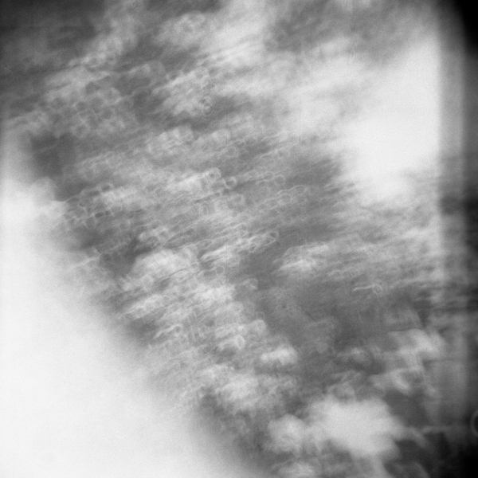
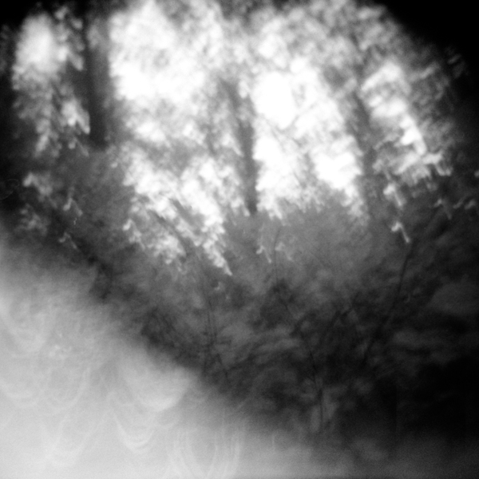
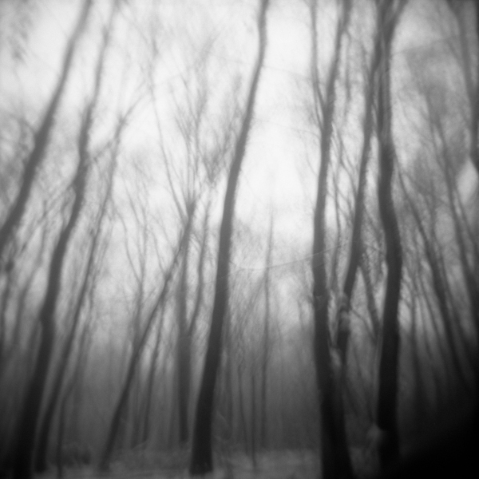
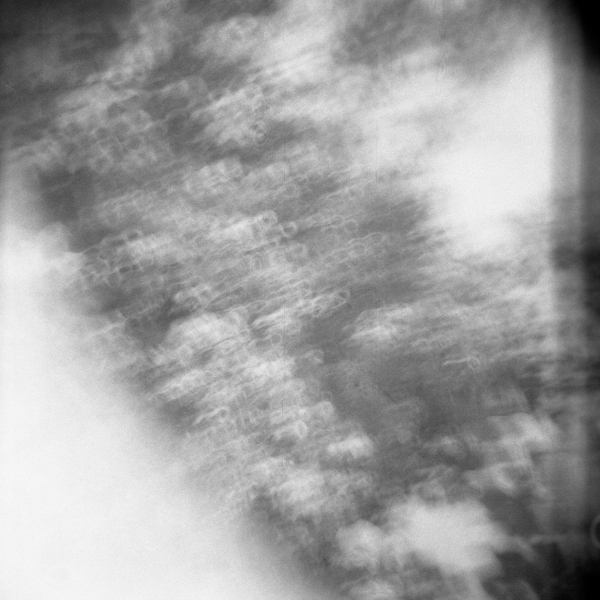
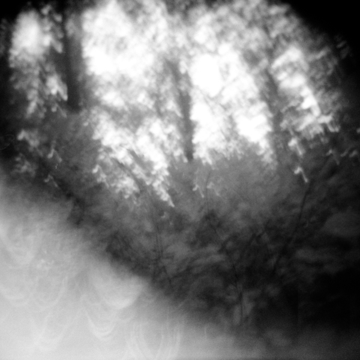

anna laura s
my mental exhaustion; lack of clear boundaries for anything in the world around us. trying to find beauty in the indescribable and letting material things go. uncertainty and depletion.
  my mental exhaustion; lack of clear boundaries for anything in the world around us. trying to find beauty in the indescribable and letting material things go. uncertainty and depletion.
  